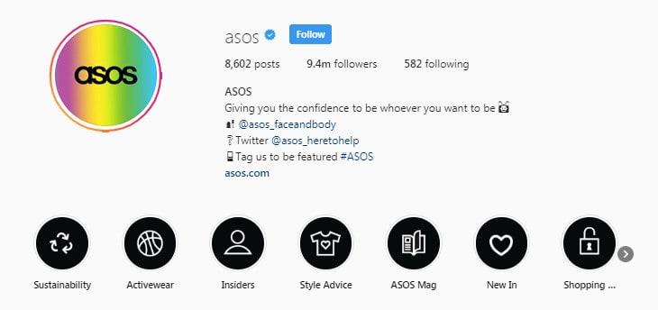
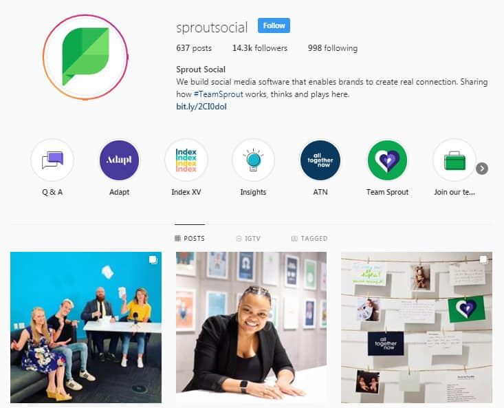
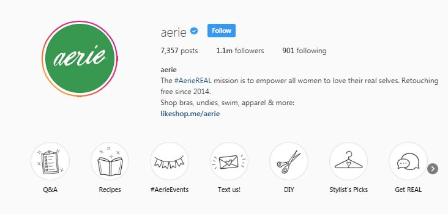
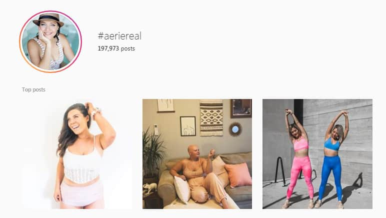
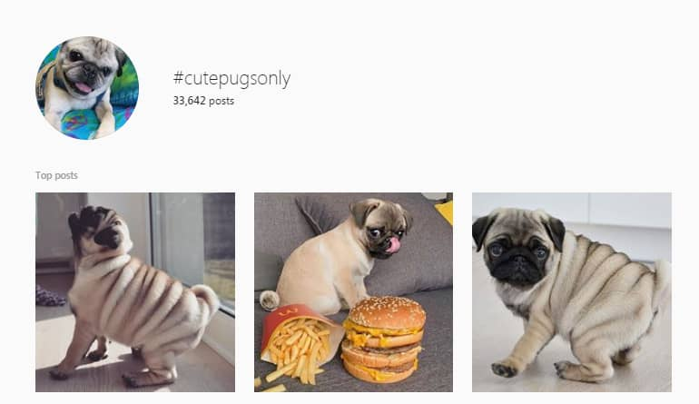

Looking for an Instagram growth hack? We’ve got you covered.
Growth hacking is more than just a marketing buzzword. A growth hacker is someone who knows how to use low-cost, creative strategies to help businesses acquire and retain their customers.
In other words, growth hacking puts you in front of the right customers and makes sure that you have what it takes to maintain their attention.
Instagram now has 1 billion users worldwide, so it’s safe to say that it has a lot of opportunities to offer when it comes to helping you connect with your audience.
However, if you want to make the most out of your social campaigns with Instagram, you need to do a lot more than just post regular pictures of your lunch, or your cat.
Here, we’re going to show you how you can use growth hack tactics to transform your Instagram presence and gain more followers.
Get ready for some serious Instagram growth.
Instagram Hack 1: Start by Optimizing your Profile
Your content might be the heart of your Instagram campaign, but your profile is how your customers build a relationship with your brand.
Optimizing your account is probably the most essential Instagram growth hack there is. It ensures that you earn the attention of search engines with keywords, drives people back to your website with valuable links, and generate ongoing interest in your company.
So, how do you start improving your profile?
- Use a memorable user handle: Your @Name needs to be something your followers will remember, like your business name.
- Use keywords in your business name: The name that shows at the top of your profile is a great place to improve your SEO rankings. For instance, instead of Cathy’s Kit, make it Cathy’s Kit Clothes.
- Engage your audience: Use emojis to interact with your audience on their level.
- Include relevant hashtags: Remember to get your customers talking about your brand with proper tags and branded hashtags.
- Use @Mentions to link to other accounts: Spread your social presence by linking to other profiles on Instagram with @Mentions
- Make the most of business features: Use contact buttons to give your followers numerous ways that they can reach you.
- Pick the right profile picture: If you’re a corporation, a logo should be fine. If you’re a person, stick to a picture of you smiling!
- Implement highlights: Give your followers more information and enhance your profile with Highlights sharing customer stories, Insider tips and other useful content.
- Use your link wisely: You only get one link in your bio from Instagram, so make sure that you use it to drive the right attention to the right places.
Check out @ASOS for an excellent example of an Instagram profile done right:

Instagram Hack 2: Improve Your Aesthetics
If you want to become an Instagram growth hack expert, you need to learn how to make the most of visuals. More than any other digital platform, Instagram is all about images. Your followers will expect to see stunning photos, videos, and slideshows from your company. That means that while your smartphone might give you an efficient way to stock up on material, it might not deliver the professional results you need.
To enhance your Instagram aesthetics, consider learning how to upload your content to Instagram from your PC or Mac so that you can use a DSLR camera instead. Alternatively, if you’re limited with the kind of photos you can take, you can always upgrade your image by using an app like VSCO, the Adobe Photoshop app, or even Canva. All of these tools will let you edit and enhance your photos to give them a better finish.
Remember, themes rule on Instagram, so keep your photos on brand by using the same:
- Fonts: No more than 3 or 4
- Colors: Stick to your brand colors where you can
- Filters: Don’t go overboard with these
You can even plan out your Instagram grid in advance to make sure that it looks incredible. Look at how Sprout Social uses consistent editing, colors, and themes in their content for a more cohesive profile:

Instagram Hack 3: Curate More User-Generated Content
Want to go viral with your Instagram growth?
9 times out of 10, it’s not your own content that’s going to get you there – it’s the content that your audience produces on your behalf.
Today’s customers are far more likely to purchase from brands that are recommended by their peers. If you can convince your audience to do some of your marketing for you, then you’ll see your presence grow in no time.
One of the easiest ways to encourage user-generated content from your audience is to include a branded hashtag on your Instagram bio. @Aerie convince their customers to get involved with user-generated content by asking them to use the #AerieREAL tag to empower more women to love themselves. That’s a fantastic and emotional reason for customers to get sharing.

The fact that Aerie put a story behind their request for user-generated content, meant that they’ve been able to gain countless pieces of material from their audience. They have over 197,000 photos and counting:

If you’re having a hard time convincing your audience to use your branded tag, try bribing them with the promise of a gift. A competition that asks users to share them using your product, combined with a branded hashtag can generate plenty of UGC in no time!
Instagram Hack 4: Interact with Influencers
User-generated content is great. However, if you want to take advantage of that Instagram growth hack, you’ll need to make sure that you have plenty of followers to connect with first. When you’re just starting on Instagram, it can be challenging to build an effective presence alone. Influencers are how you give your brand a much-needed launching pad into the niche or industry you want to connect with.
According to BigCommerce, in 2019, 19% of marketers are spending an average of between $1,000 and $10,000 on influencer marketing. What’s more, another 18% of marketers say that they’re spending up to $500,000 per year on influencers. That’s a serious amount of cash.
So, do you need to spend a fortune on Influencers to get Instagram growth?
Not necessarily.
Micro-influencers can be just as effective as their more costly counterparts. That’s because people generally feel that micro-influencers produce more raw and authentic material. Additionally, these smaller influencers are more likely to engage with their audience than big celebrities. The key to success is finding someone who has a genuine connection with the customers you want to reach. If you need help finding an influencer, try a tool like HYPR. It’s free for the first 100 searches.
Instagram Hack 4: Use Your Hashtags Wisely
Hashtags are some of the most valuable tools you’ll have in any Instagram growth strategy.
They’re not there to tell your audience what your post is about. Hashtags also improve the visibility of your profile to an incredible extent, helping you to reach new customers from all over the world. However, you do need to learn how to use these tools effectively if you want to make the most out of them. For instance, it’s not enough to just use popular tags like #TBT or #InstaGood on every post; you’ll also need to get creative.
Kenji.AI and other advanced hashtag solutions will help you to find niche hashtags that are more likely to capture the attention of your target audience. Remember, Instagram posts with even one hashtag improve engagement by 12.6%. To make the most out of your hashtags:
- Remember to use location tags to get involved with your local community
- Use plenty of tags in each post – interactions are highest on content with 11 or more tags.
- Mix it up: Don’t use the same hashtags every time, or Instagram could penalize you for being too “spammy.”
- Go niche: Don’t just compete for #CutePuppies, try #CutePugsOnly instead:

If you have your own branded hashtags, don’t forget to encourage your users to follow them and share them with friends too! This will help to drive more attention back to your Instagram profile.
Instagram Hack 5: Discover the Value of Video
Video is bigger than ever on Instagram today.
Thanks to the rise of Instagram Live for real-time streaming, and IGTV for longer videos from a reputable brand, Instagram is quickly becoming the go-to place for social video. If you haven’t tried upping your game with a video campaign yet, you could be missing out.
According to statistics, 87% of marketers are currently investing in video, and the number keeps growing. Fortunately for Instagram users, it’s easy to get started with a video strategy. You can:
- Share limited-time videos on Instagram Stories: Stories is a great place to launch your video strategy if you’re still new to the format. Because your videos only stick around for 24 hours, they’re not going to haunt you for too long if they don’t have the right impact on your audience. If you do end up with a great video, you can always save it to your Highlights so that your customers can come back to it.
- IGTV: If you’ve been experimenting with video for a while now, and you think you’re ready to take it to the next level, an IGTV account can help your business to grow at an incredible pace. Netflix receives millions of viewers for the content that it publishes on Instagram’s IGTV platform. Because IGTV gives you more time to work with than a standard video, it also means that you can share more information too.
- Instagram Live: Need to connect with your audience in a more intimate way? Instagram Live is the ideal way to do that. With a Live video, you can create an authentic relationship with your audience through Q&A sessions, webinars, How-to videos, and more. It’s also a great way to take your customers behind the scenes of your brand.
https://www.instagram.com/p/B01sre2nCWA/?utm_source=ig_web_copy_link
Instagram Hack 6: Get Some Professional Assistance
Hacking your Instagram efforts isn’t easy.
Even with all the strategies that we’ve suggested above, it’s usually going to take some time and experimentation before you find an Instagram growth strategy that works for you.
Unfortunately, when you have a business to run, it can be challenging to find the time to focus enough attention to your Instagram campaign and your company at the same time.
So, how do you balance both business growth and Instagram success without tearing your hair out?
The simple option could be to invest in a professional to do the hard work for you. Companies like Upleap can assign dedicated social media managers to your business. Because you’re dealing with a digital brand, you don’t need to pay the overheads of actually having someone come and work for you. Instead, you get all the benefits of an Instagram specialist, without the added expense.
With Upleap, and other Instagram growth hacking services, you can hand the stress of growing your Instagram presence over to someone else, so you can continue working on other parts of your business. It’s the fastest way to upgrade your engagement, your follower count, and your reach, without having to invest in new members for your team.
Ready to Achieve Massive Instagram Growth?
Like any other business strategy, an Instagram growth campaign requires constant care and attention if you want to get the best return on your investment.
Instagram has the power to transform your business by strengthening your connections with your target audience, helping you to reach new customers, and improving your brand appeal. However, you’ll need to figure out how to optimize your Instagram efforts before you start to see results.
Instagram growth hacks, like the ones that we mentioned above, will give you a way to accelerate your social media results. However, you need to be willing to put the right amount of time and effort into them. If you can’t handle working on your profile every day, creating exceptional content, and building on the analytics you collect, hand the task over to someone who can do it for you.
Remember to stick with SocialFollow for more tips and tricks on how to make the most of Instagram, and contact us today to find out how we can get you free, authentic followers instantly!